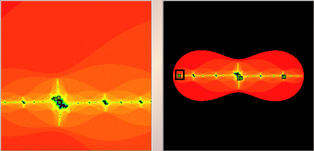

|  |
| On the left is a magnification of the box indicated on the right. |
| Now we see the box contains 3 cycle points. |
| Click the other two regions on the right to magnify. |
| Here is a compilation of the results of these three magnifications. |
Return to Samples.